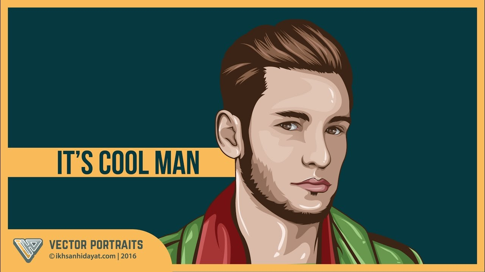

Illustrator skulle siges at være det mest populære tegneprogram i verden. Man bruger illustrator for at skabe grafisk kunst. Man designer på artboards og arbejder i lag, hvilket vil sige at man berører specifikke elementer uden at ændre på andet. Illustrator er baseret på vektor, hvilket betyder at når filen skaleres mister den ingen kvalitet. I vores første undervisningstime legede vi meget med blend tool.
Photoshop er et program man bruger til at forbedre og manipulere billeder og videoer og skabe digitalt kunstværk. Man bruger det for at give billederne nogle specielle effekter, eller sammensætte ting, derudover kan man også gøre ting ”usynlige” altså fjerne noget der er på et billede, hvor det stadig ser naturligt ud. I photoshop arbejder man også med lag for at berøre enkelte elementer.
Jeg har arbejdet med ”compositing effects” hvor jeg sammensmeltede to billeder og pyntede det med lidt forskellige effekter